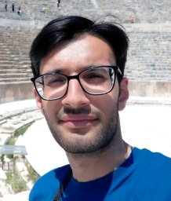

M. Arda Aydın

I am a master’s student at Bilkent University, working with Prof. Tolga Çukur in the Imaging and Computational Neuroscience (ICON) Lab.
My research focuses on medical image analysis. I study how vision-language and foundation models can be efficiently adapted to medical imaging tasks, with a particular interest in segmentation and understanding how these models make their predictions.
Previously, I worked with Prof. Gözde Ünal at the ITU Vision Lab on training-free open-vocabulary semantic segmentation.
You can find more about my work on my Google Scholar page and CV.
News
2026
Our preprint ACE-LoRA is available on arXiv.
2025
Presented ITACLIP at CVPR 2025 Workshops in Nashville.
Selected Publications

CVPRW
ITACLIP: Boosting Training-Free Semantic Segmentation with Image, Text, and Architectural Enhancements
IEEE/CVF Conference on Computer Vision and Pattern Recognition Workshops · 2025
Turning image-level vision-language representations into pixel-level predictions through image, text, and architectural enhancements, without additional training.
Education
2024–present
Bilkent University
M.S. in Electrical and Electronics Engineering · Ankara, Türkiye
2019–2024
Istanbul Technical University
B.S. in Electronics and Communication Engineering · Istanbul, Türkiye